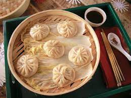

Dumplings

Description
Is a broad class of dishes that consist of pieces of dough wrapped around a filling, or of dough with no filling.
Ingredients
- White rolls
- milk
- shallot
- Butter
- Freshly chopped parsley
- Salt
- Freshly ground peppers
- Freshly grated nutmeg
- Eggs
- Breadcrumbs (if needed)
Steps
- Cut rolls into thin slices and place in a bowl
- Boil milk and pour over roll slices. Let soak about 10 minutes.
- Peel shallot, chop finely and sauté in butter until translucent. Stir parsley into butter mixture and season with salt, pepper and nutmeg. Allow butter mixture to cool briefly.
- Add eeggs and butter mixture to soaked r
- Add eggs and butter mixture to soaked roll slices and mix well. If necessary, add milk or bread crumbs to form an easily malleable dough.
- With moistened hands, form dough into 8-10 dumplings.
- Place dumplings in boiling salted water and simmer about 20 minutes. Do not allow water to return to a boil.
- Lift dumplings from water with a slotted spoon and serve.